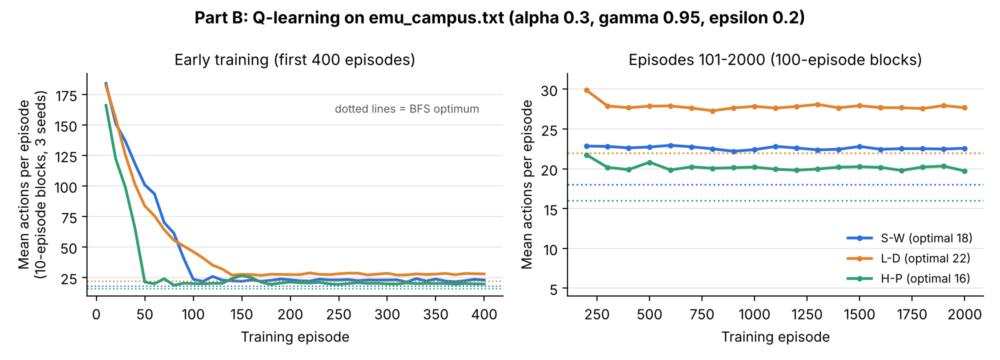
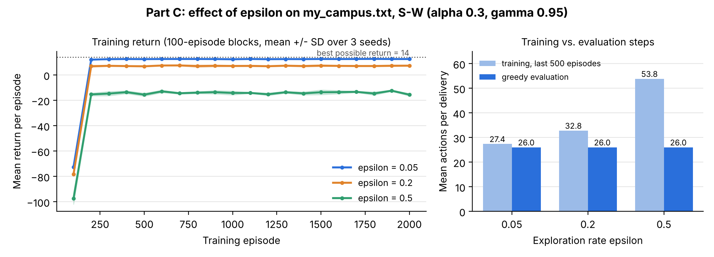

(row, column) tuple. Any non-# cell, including building letters, is a valid state.campus.neighbors).Why BFS is optimal here. BFS uses a FIFO queue, so it removes nodes in order of depth: all depth-1 nodes, then all depth-2 nodes, and so on. Every step costs 1, so a node's depth equals its path cost. The first time BFS removes the goal, no cheaper route can exist, because every cheaper route would be shallower and would have been reached first.
manhattan(s, g) returns h(s) = |rs − rg| + |cs − cg|. Each move changes either the row or the column by exactly 1. So any route needs at least |Δr| vertical moves and |Δc| horizontal moves, and walls can only force extra moves. This means h(s) ≤ h*(s), the true cost to the goal, for every state, so h is admissible. It also gives h(goal) = 0.
astar keeps a heap of (f, insertion number, g, state) with f = g + h, plus dictionaries for the best known g-cost and parent of each state. Successors come from campus.neighbors in UP, DOWN, LEFT, RIGHT order. A successor is added (or re-added) only if its new g is strictly cheaper. When a popped entry's g no longer matches the best g, it is skipped as stale. The goal test happens when a non-stale entry is removed, and a node counts as expanded when its successors are generated. All 14 public tests pass, and BFS reproduces the expected S→W result (18 moves, 67 expansions).
| Map | Delivery task | BFS route length | A* route length | BFS expanded | A* expanded | A* saving |
|---|---|---|---|---|---|---|
| Baseline | S Student Center → W Walton Hall | 18 | 18 | 67 | 22 | 67% |
| Baseline | L Halle Library → D Downing Hall | 22 | 22 | 79 | 62 | 22% |
| Baseline | H Pray-Harrold → P Putnam Hall | 16 | 16 | 41 | 16 | 61% |
| Detour | S Student Center → W Walton Hall | 26 | 26 | 70 | 51 | 27% |
| Detour | L Halle Library → D Downing Hall | 22 | 22 | 65 | 60 | 8% |
| Detour | H Pray-Harrold → P Putnam Hall | 16 | 16 | 41 | 16 | 61% |
Route lengths are equal in all six tasks. Both algorithms are optimal here: BFS because every step costs 1, and A* because the Manhattan heuristic is admissible. A* expanded fewer nodes in all six tasks, but the savings vary a lot (8% to 67%). The savings depend on how close h is to the true cost. For H→P, h(H) = 16 equals the true cost, so A* expands only the 16 nodes on its route. For L→D, the best route must climb up into row 3 twice. Those UP moves raise h, so the true cost is far above the estimate, many nodes tie on f, and A* explores almost as widely as BFS. On the detour map, the closure at (3, 6) turns the 18-move S→W route into a 26-move route while h(S) stays 14. A* first follows the now-blocked direct direction, which is why its saving drops from 67% to 27%. So A* does not always expand far fewer nodes. When walls make the true cost much larger than h, it behaves almost like BFS, and with unlucky ties it could even expand more.
Implementation. epsilon_greedy draws rng.random(). With probability ε it returns rng.choice over all four actions. Otherwise it returns an action with the largest Q(s, a), where unseen pairs count as 0.0 and ties are broken with rng.choice. q_learning_update uses the target y = r for a terminal transition and y = r + γ·maxa′Q(s′, a′) otherwise, with unseen actions included at 0. It then applies Q(s,a) ← Q(s,a) + α[y − Q(s,a)], which is the lecture's running average (1−α)Q + α·sample. Settings: 2,000 training episodes, seeds 0/1/2, α = 0.3, γ = 0.95, ε = 0.2, slip = 0, 200-action cap, and 100 greedy evaluation episodes (ε = 0, learning frozen). All values below are means over the 3 seeds, from results/training_stats.csv.
| Task | BFS optimum | Timed-out training episodes | First optimal training episode | Training steps, ep. 1–100 | Training steps, last 500 | Share of last 500 that were optimal | Eval success | Eval steps / return |
|---|---|---|---|---|---|---|---|---|
| S → W | 18 | 17.0 | 103 | 98.0 | 22.5 | 5.7% | 100% | 18 / 22 |
| L → D | 22 | 8.7 | 140 | 93.9 | 27.7 | 2.8% | 100% | 22 / 18 |
| H → P | 16 | 15.3 | 62 | 57.6 | 20.1 | 7.5% | 100% | 16 / 24 |

#####################
#S........#########W#
#####.#############.#
#####....L#########.#
#####.#############.#
#####...............#
#####.#########.###.#
#####.#########.###D#
#####.#########.#####
#...............#####
#.#############.#####
#H#############P#####
##################### |
(a) Map design.
A* walks into the top dead end and the L spur first. Each step there lowers h by 1 and raises g by 1, so f stays at 19 and 23, the lowest values on the frontier. A* never enters the bottom of the loop, though, because f = 28 there is above the optimal cost of 26. BFS expands 61 of the 62 cells. |
Only ε changed, set to 0.05, 0.2 and 0.5. Everything else was fixed: my_campus.txt, S→W, α = 0.3, γ = 0.95, slip = 0, 2,000 training episodes, a 200-action cap, and seeds 0, 1 and 2. Each seed started from a fresh, empty Q-table, for 9 runs in total. After training, each table was frozen and evaluated greedily (ε = 0) for 100 episodes. Commands: run_project.py train --map maps/my_campus.txt --epsilon E --output results/custom_eXXX, then summarize_results.py.
| ε | Timed-out training episodes | First 20-success streak starts | First optimal (26-step) episode | Training steps, last 500 | Training return, last 500 | Optimal share, last 500 | Total training actions | Eval success / steps / return |
|---|---|---|---|---|---|---|---|---|
| 0.05 | 22.3 | ep. 37 | ep. 86 | 27.4 | 12.6 | 37.9% | 62,507 | 100% / 26 / 14 |
| 0.2 | 23.7 | ep. 54 | ep. 106 | 32.8 | 7.2 | 1.6% | 73,231 | 100% / 26 / 14 |
| 0.5 | 31.3 | ep. 60 | never | 53.9 | −13.9 | 0.0% | 115,298 | 100% / 26 / 14 |

Reproducibility. All raw CSVs (training_seed*.csv, evaluation_seed*.csv, summary.csv, learning_curve.csv) are in results/. search_table.py rebuilds the search tables, and analyze_results.py rebuilds training_stats.csv and both figures.